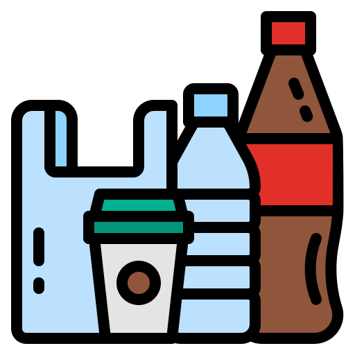

Ana Sayfa
Ana Sayfa Plastiğin Tarihçesi
Plastiğin Tarihçesi Plastiğin Zararları
Plastiğin Zararları Plastik Türleri
Plastik Türleri  Yaygın olarak kullanılan plastik türleri; (Kullanılan kaynak:kalkangeridonusum.com)
- Polietilen (Polyethylene) (PE): Geniş bir kullanım alanı vardır.
- Polipropilen (Polypropylene) (PP): Yaygın kullanılan plastiklerdendir. Otomobil yan sanayinde, bahçe mobilyalarında vb. yerlerde kullanılır.
- Polistiren (Polystyrene) (PS): Paketleme, elektronik ve beyaz eşyaların plastik kısımları vb. kullanım alanları vardır.
- Polietilen tereftalat (Polyethylene terephthalate) (PET veya PETE): PET, polyester ailesindeki en yaygın polimerdir. Pet şişe ismi bu malzemeden gelmektedir. Yüksek mukavemet özelliğinden dolayı sentetik kumaşlarda da yaygın olarak kullanılmaktadır.
- Polyamid (Polyamide) (PA) (Nylon): Fiber, diş fırçası kılları, misina vb. kullanım alanları vardır.
- Polivinil klorür (Polyvinyl chloride) (PVC): Boru, profil vb. imalatında kullanılır.
- Polikarbonat (Polycarbonate) (PC): CD, gözlük vb. imalatında kullanılır. Alevi iletmeme ve kendini söndürme özelliğine sahiptir.
- Akrilonitril bütadien stiren (Acrylonitrile butadiene styrene) (ABS): Elektronik aletlerin plastik aksamında yaygın olarak kullanılır.
- Poliviniliden klorür (Polyvinylidene chloride) (PVDC) (Saran): Yiyecek paketlemede kullanılır.
- PET/PETE: Genelde içecek şişeleri (su, gazlı içecekler vb.) PET plastik ile üretilir. Geri dönüşümü kolaydır ve geri dönüştürüldükten sonra birçok farklı üründe kullanılabilir.
- HDPE: HDPE plastik türleri zehirli değildir ve genelde yiyecek içecek saklayıcılarında kullanılır. Bu plastik türleri, yeniden kullanıma uygun değildir ancak geri dönüştürülüp çit ve sandık yapımlarında kullanırlar.
- PVC: Markete gittiğinizde karşınıza çıkan birçok ürün, LDPE plastik kullanılarak üretilmiştir. Plastik bahçe masası ve sandalyesi gibi ürünlerde de LDPE kullanılır.
- LDPE: Markete gittiğinizde karşınıza çıkan birçok ürün, LDPE plastik kullanılarak üretilmiştir. Plastik bahçe masası ve sandalyesi gibi ürünlerde de LDPE kullanılır.
- PP: Yaygın plastik türleri arasında polipropilen, yüksek sıcaklara dayanabilen ve erimeyen bir plastiktir. Yoğurt kaplarında ve otomotiv endüstrisi gibi çeşitli alanlarda kullanılır.
- PS: Plastik türleri arasında geri dönüşümü en zor olan türlerden birisi polistirendir. Kahve bardaklarında ve oyuncaklarda kullanılır. Geri dönüştürüldüğünde araba plakası çerçevelerinde ve cetvellerde kullanılır.
- PC: Araba parçalarında, bazı yemek kaplarında ve damlatmaz bardaklarda bulunur. Bunun dışında plastik kerestede de kullanılır.